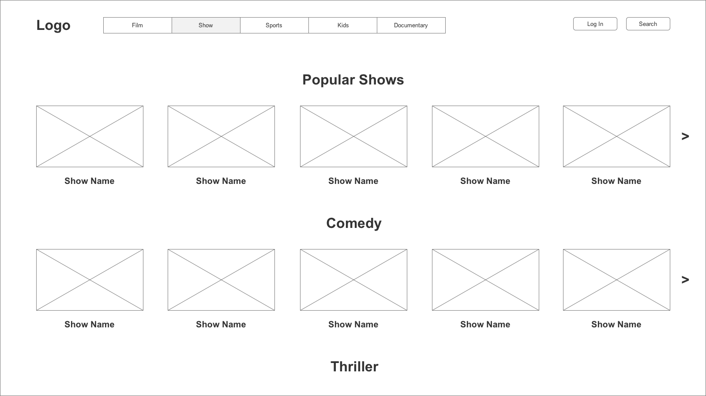
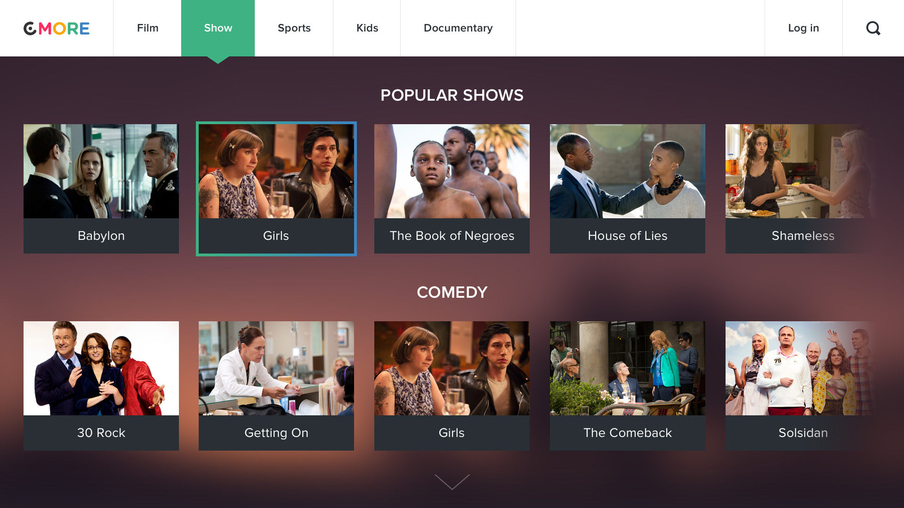
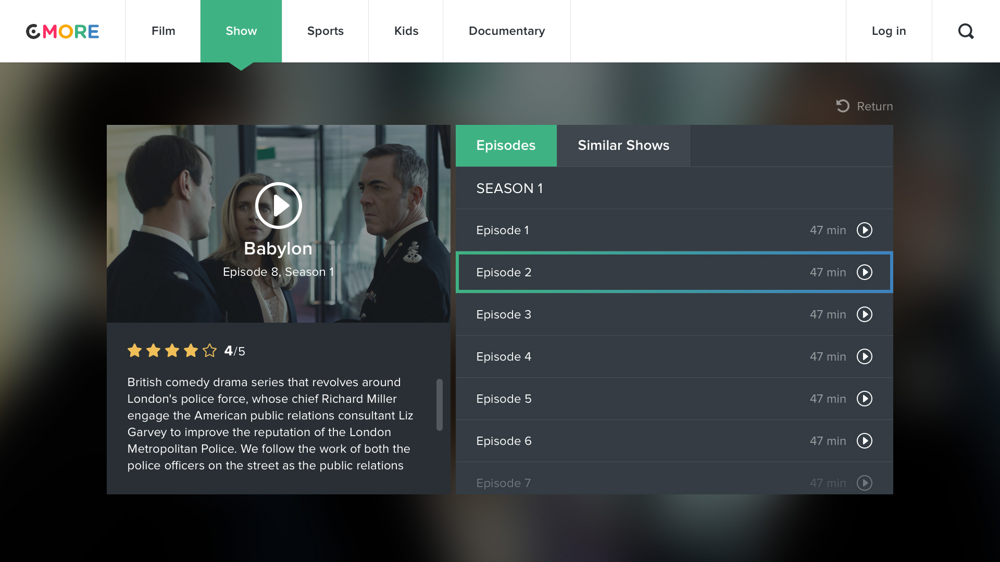
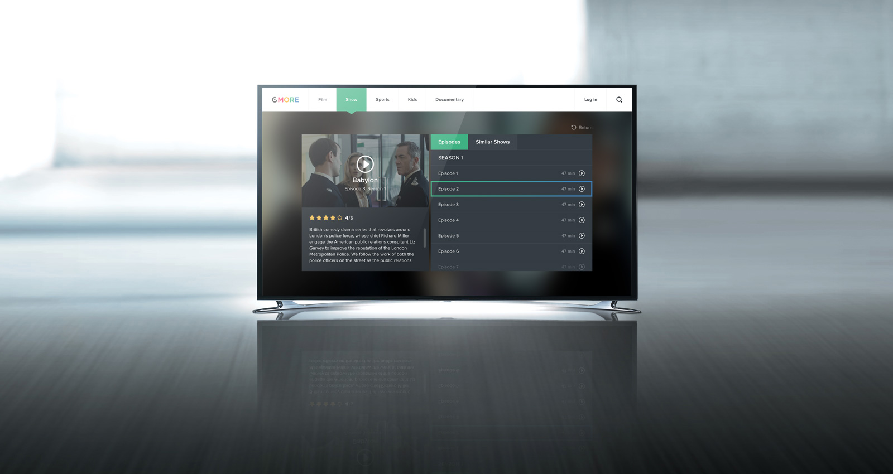

Sketching
I determined the main elements of the app and tried to play with different layouts. The navigation includes 5 categories: Film, Show, Sports, Kids, and Documentary.


Prototyping
Two prototypes were built to approve the layout and elements.

Finalizing
On the final stage I used the prototypes I've made before to make a clear user interface. Tried to stay consistent with the original while choosing fonts and colours for the final design.
  